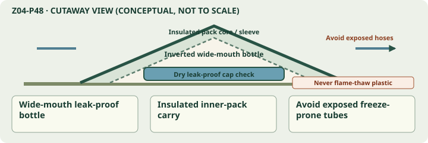

Z04-P48 · Water · New manuscript
Prevent bottle, bladder and valve freezing during winter transport
Keep treated drinking water liquid and accessible during subfreezing travel without damaging bottles or soaking insulation.
When it applies · Winter hiking, skiing, snowshoeing or cold vehicle emergencies below 32°F (0°C).
Equipment · Wide-mouth insulated bottles, tight-sealing leak-proof caps and insulating sleeves or inner-pack placement.

Actions
- Prefer wide-mouth hard bottles over narrow-neck bottles or thin hydration bite-valves and tubes, which freeze shut quickly in subfreezing wind.[E15, E10, ED]
- Carry water inside insulated sleeves or near the center of your pack wrapped in spare layers, storing wide-mouth bottles upside down so ice forms away from the threads first.[E15, ED]
- Check cap gaskets before stowing inside dry insulation or a sleeping bag so a leaky lid cannot soak critical dry clothing or bedding.[E10, W06, ED]
Failure recognition · Relying on an exposed shoulder-strap hose that freezes solid in the first mile, leaving liters of water inaccessible until camp.[E15, ED]
Verify · Confirm caps seal leak-free, mouth openings are accessible without frozen valves and water stays liquid at scheduled drink breaks.[W06, ED]
Stop or change course · Never warm frozen plastic bottles directly over open flame or stove burners; thaw safely in warm water or sheltered body/ambient heat.[W02, C15, ED]
Evidence and editorial notes
- C15 · NPS · Wildland Fire Safety (current web edition)
- Section: Wildland Fire Safety > Campfires and Stoves · Conditions: Outdoor cooking with portable liquid or canister stoves
Support: Operate stoves on level cleared ground away from tents and dry fuels, cool completely before refueling, and move away from any spilled fuel before lighting.
Limitations: Fuel canisters behave differently in cold weather and high elevation; follow manufacturer limits. · Conflicting evidence: None; aligns with CPSC-C and USFS-FIRE.
Editorial note: Governs stove setup, refueling isolation, and spill failure recognition. · Specialist reviewer: Portable appliance safety and fire prevention
Primary source · checked 2026-11-24 - E10 · NWS · What To Do If You're Caught in a Winter Storm (current web edition)
- Section: Outside > Protect yourself from frostbite and hypothermia · Conditions: Outdoor winter storm
Support: Keep clothing dry and avoid overexertion. Wetness accelerates cooling.
Limitations: Cotton retains moisture and accelerates conductive and evaporative heat loss. · Conflicting evidence: None; reinforces moisture-management layering.
Editorial note: Links sweat management to overnight insulation integrity. · Specialist reviewer: Cold-weather shelter and wilderness medicine
Primary source · checked 2026-11-24 - E15 · NWS · Cold Weather Safety (current web edition)
- Section: Cold Weather Safety > Wind Chill and Dressing for Cold · Conditions: Cold, windy conditions where exposed skin cools rapidly
Support: Wind removes the thin warm air boundary layer around skin and permeable fabrics, sharply accelerating heat loss and frostbite onset; windproof outer shells and sheltered microclimates mitigate convective loss.
Limitations: Wind chill charts apply to exposed skin and do not change freezing point of water or equipment. · Conflicting evidence: None; clarifies physical mechanism of convective heat loss.
Editorial note: Supports wind-block geometry, shell layering, and wind-chill risk decisions. · Specialist reviewer: Cold-weather shelter and meteorology
Primary source · checked 2026-11-24 - W02 · CDC · How to Make Water Safe in an Emergency (2024-09-19)
- Section: Boil > Steps for boiling water · Conditions: Microbiologically suspect water with acceptable chemical source; portable heat and safe vessel
Support: Clarify cloudy water first. Rolling boil for one minute; above 6,500 feet for three minutes. Cool and cover in sanitized containers.
Limitations: Does not remove dissolved metals, nitrates, fuel, or cyanotoxins. · Conflicting evidence: Older Track B B009 omitted the 6,500 ft threshold; CDC threshold governs.
Editorial note: Require explicit timer verification after rolling boil starts. · Specialist reviewer: Drinking-water safety and public health
Primary source · checked 2026-11-24
Current assessment · W2C-E047 (2026-11-28) · Open: agencies differ; a specialist decision is needed: CDC uses three minutes above 6,500 feet; EPA uses three minutes above 5,000 feet. Cards follow the CDC wording; the more conservative EPA threshold is recorded for decision. Limits: Not changed on cards in W2C-B07. - W06 · CDC · How to Create an Emergency Water Supply (current web edition)
- Section: How to store emergency water; Safe storage containers · Conditions: Potable water intended for emergency storage
Support: Prefer sealed commercial water or clean food-grade tight-closing containers. Avoid containers that held toxic chemicals.
Limitations: Container shelf durability and rotation depend on plastic/material type and storage heat. · Conflicting evidence: None; reinforces strict raw-vs-clean segregation.
Editorial note: Used to enforce labeling and dedicated raw/potable vessel separation. · Specialist reviewer: Drinking-water safety and public health
Primary source · checked 2026-11-24
Source lineage · NWS cold safety and CDC cold-weather limits; new manuscript · Classification · New manuscript.